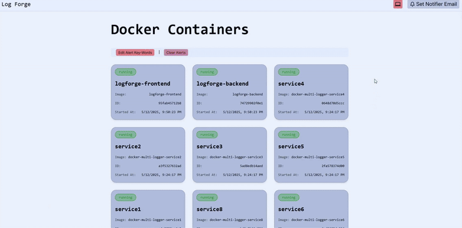

Docker alerts that act
Catch alerts. Trigger fixes.
LogForge watches Docker logs for the keywords you care about, routes the alert, and kicks off the automation that fixes it. Run it locally with Docker Compose and keep operational data close to your hosts.
Install
Install the alerting and automation loop locally.
Clone the repository, start the services, and open LogForge on your machine to watch logs, match keywords, route alerts, and trigger fixes close to your hosts.
Docker Compose quick start
git clone https://github.com/log-forge/logforge.git
cd logforge
docker compose pull
docker compose up -d
docker compose ps
# Open LogForge
https://localhost:8444Core Workflow
From log keyword to automated fix.
LogForge keeps the operational loop tight: watch Docker logs, match the keywords that matter, route the alert, and trigger the fix automation.
Watch logs
Stream Docker logs from local hosts and keep service state close to the containers that produced it.
Match keywords
Filter for errors, warnings, and custom patterns so alerts focus on the events that need action.
Trigger fixes
Route matched alerts into scoped fix automations that start remediation when the signal fires.
Verify outcomes
Check container state, alert history, and automation results before closing the loop.

Enterprise Ready
Control points for teams that want local ownership and operational polish.
LogForge adds the practical safeguards teams expect before alerting and fix automations become part of everyday infrastructure.
Local authentication
Keep sign-in, admin workflows, and team access close to the deployment.
mTLS enrollment
Enroll monitored endpoints with mutual TLS patterns before telemetry is accepted.
Durable telemetry
Pair live operational views with retained state for follow-up investigations.
Hardened runtime
Use tighter defaults that fit shared hosts and production-like Docker environments.
Alert routing
Send matched keyword alerts to email, Discord, Slack, Telegram, Gotify, and webhook workflows.
Admin controls
Manage service state, access, retention, and dashboard operations from one surface.
Trusted by users at
Netflix
Microsoft
Amazon
Cisco
Mercedes-Benz
GitHub
Follow LogForge on GitHub
Track implementation notes, issue discussion, and product updates for Docker keyword alerts and fix automations.
Compare
LogForge vs alternatives.
LogForge
LogForge turns Docker log keywords into alerts and fix automations without a cloud control plane.
Local dashboard
Keyword alerts
Fix automations
Container context
DozzleOnly works while you are watching.
PapertrailCharges for search and lacks real-time alerts.
DatadogHeavy, expensive, and cloud-locked.
Grafana and LokiRequire complex setup and tuning.
ELK StackNeeds multiple services and constant maintenance.
BetterStackCloud-only and built for ops, not developer workflows.
Plans
Start free. Add premium depth when your team needs it.
Free covers local keyword alerts. Premium adds scoped fix automations, automation history, role-based access, and per-container controls.
Free
Keyword alerting essentials.
Real-time Docker logs
Self-hosted alert dashboard
Discord, Slack, Telegram, Gotify, and email
Global alert keywords
Optional AI-assisted alert summaries
Premium
Scoped automations for team operations.
Scoped fix automations
Automation history
Role-based access control
Per-container alert keywords
Per-container automation controls
Custom notification channels
Reserve Your Spot